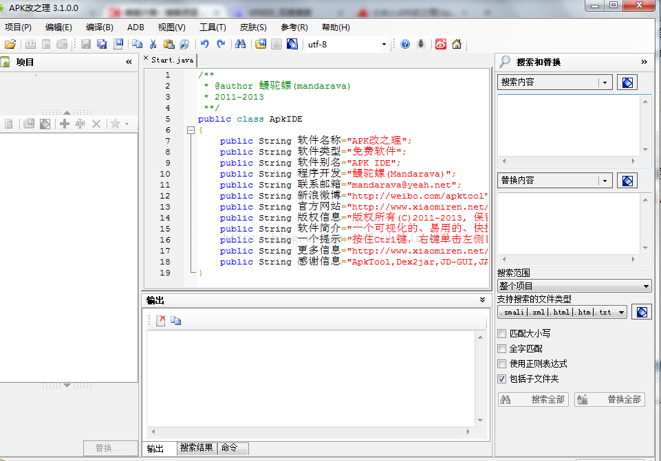
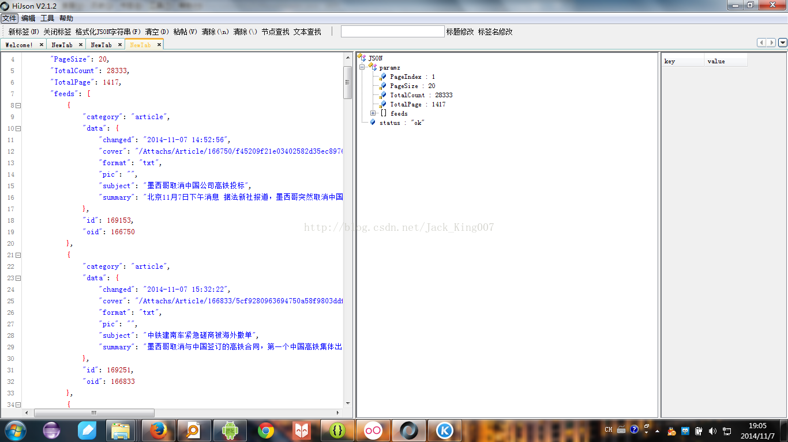
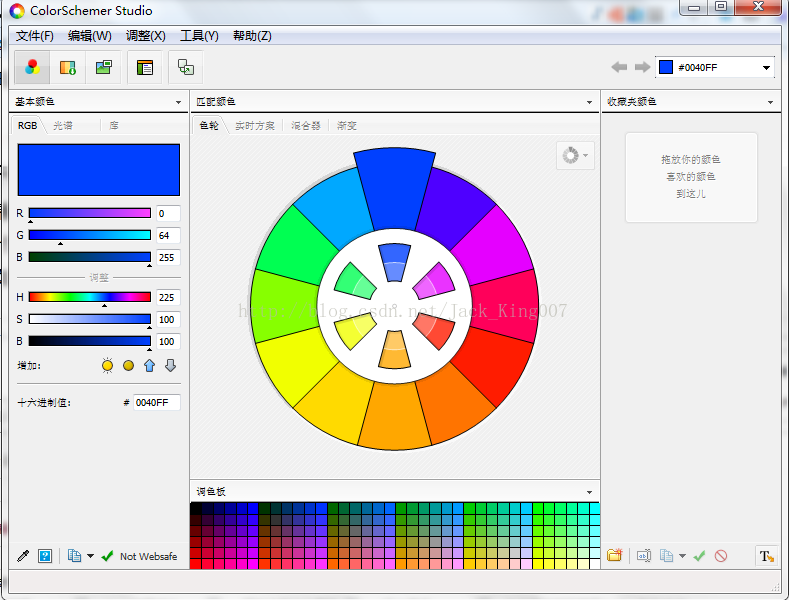
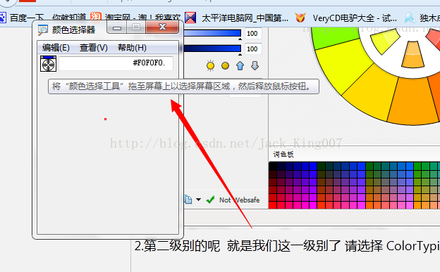
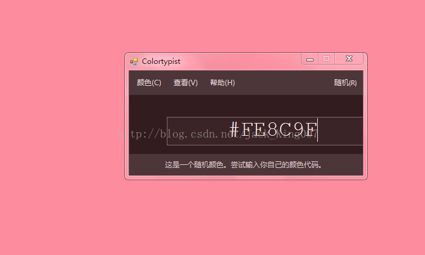
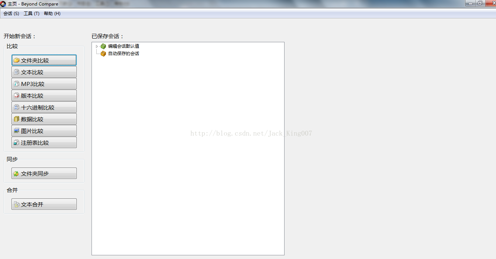
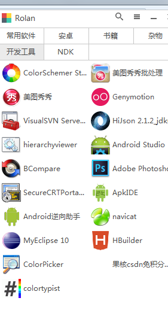
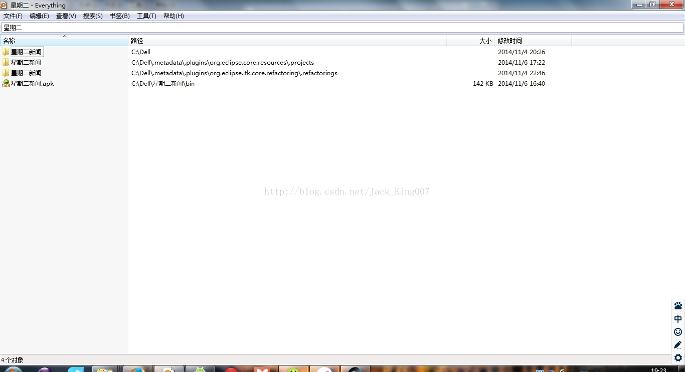

1.你应该要懂安卓逆向破解
在一种意外的情况下，爱上了腾讯的手游游戏，正好，那时候，天天酷跑，天天飞车真的很火。好吧，无意之间在以前黑客论坛逛帖子的时候，有人出了一个安卓逆向破解，无耻了学了，然后搞了半年的腾讯破解，不说多了哈
对于破解安卓APK 你只需要一个软件，功能能满足你的变态需求，当然你可以顺便学习一下smail语法，对你破解有很大的帮助。
小米人APK改之理（apkIde)
2.你应该懂 json格式化 也是有软件的
有不有现在拿着json字符串，去百度《json格式化》................好吧 不扯淡了

Hi Json 你值得拥有
3.对于程序员来说，你应该知道怎么把别人的颜色偷来
每一次看着丑陋的UI，每一在想用什么颜色的时候，最后还是改成了黑白，有木有................
你有三个选择：分级别的哈
第一，如果小学的时候美术学的好呢 请选择 ColorSchemer Studio 专门用来配色

2.第二级别的呢 就是我们这一级别了 请选择colorPicker 这个方便 直接拉着拖到想要的颜色附近 就可以

最后一个工具呢，查询颜色的， ColorTypist 当然也可以随机推荐给你颜色

4.第四个工具呢 不知道程序员最苦恼的地方是什么，方正对我来说，绝对是代码的变更，和重构，有时候不想用SVN，就用一个这个工具，他的作用就是对比 看看他的界面 你就知道有多强大了。 用他来对你你的代码 你就知道 该怎么办了
名字叫做 BCompare

第五个工具，作为程序员 桌面上，是不是放着无数的资料呢，有时候总想找一个桌面来代替，结果呢 流氓卫士正好有这个功能，最后呢 我还是把他删除了，因为他不听话太流氓了。
不过我页找到了代替的东西 好用 东西小 方便用 叫做Rolan 建议大家设置下快捷键 alt+1 早日脱离流氓卫士的魔掌

第六个 搜索工具，我承认有时候WINDOWS的搜索功能是跟强大，但是 你懂的
在你做的项目越来越多的时候，当你刚把别人APK 文件破解了以后，忙着找图片的时候，当你换了几个工作空间，找不到以前想继续做的项目的时候，你可以想想他
其实很多人都知道，他叫Everything

好啦 ，还有工具就不一一介绍了，虽然我介绍的工具，对提升你的能力没啥帮助，但是却能帮你介绍一些麻烦事情，让你静心的做开发。
今天星期五 ，祝大家周末愉快